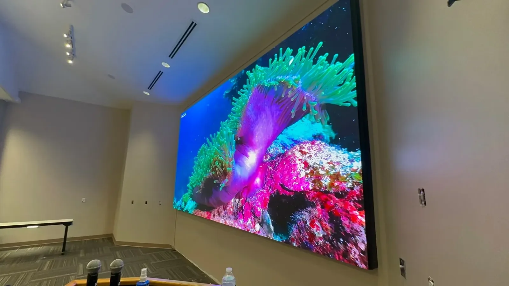
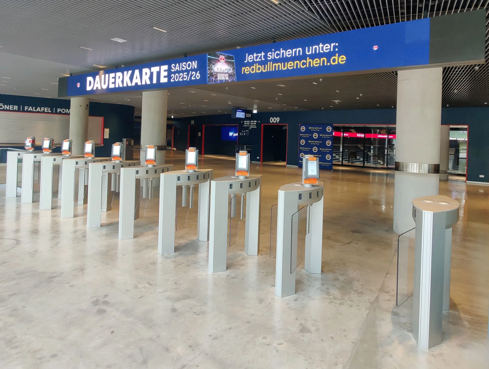
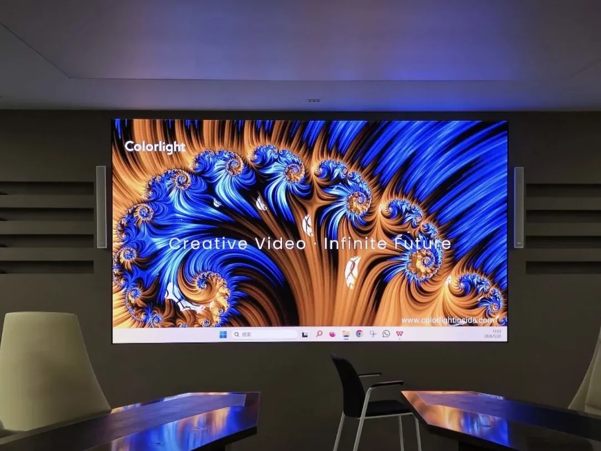

What is seismic bracing for an indoor DVLED installation? It is the secondary structure and the anchorage that keep a direct-view LED wall attached to the building when the building moves, and that appear on the bid drawings as a designed system rather than as a note to “fix the screen to the wall.” The buying decision is not only which cabinet to hang. It is whether the wall’s weight, the mounting interface, the braces or rails, the anchors, and the capacity of the supporting structure have been designed together against the site’s seismic criteria and signed off by a person who is allowed to do that work.
This guide is for consultants, integrators and bidding contractors writing indoor fixed walls in seismic regions — including markets such as Japan, where earthquake design is a normal part of a building package. It covers bracing and anchorage for indoor DVLED, not a recap of every load type. Dead load, live load, wind and the wider structural picture belong in the structural load guide; this article links to that work rather than rewriting it. Wall build-up and service space belong in the wall preparation guide. A facade or landmark attachment is a different problem, covered in the landmark facade integration article. Site measurements and existing structure checks belong in the site survey guide.
Indoor walls fail in an earthquake in ordinary ways: the array leaves the structure, a cabinet rackets in its frame, anchors pull out of a weak substrate, or a suspended header drops. The fact that the screen is indoors, or that the cabinets are described as light or thin, does not remove the requirement. In many jurisdictions the wall is non-structural building services or interior work, but it is still expected to remain in place, or to fail in a defined way, under the seismic criteria that apply to that occupancy and that importance category. Those criteria, and the coefficients or spectral values that go with them, are set by the local code and the project’s structural engineer. This article does not invent them, and a cabinet brochure should not be used as a substitute.
The design is a system design. The cabinets, the wall frame or mounting rails, the braces back to the structure, the anchors, and the slab, wall or steel that receives those anchors are one path. Changing the wall size, the void depth, the substrate or the hanging method changes the path. A drawing that only shows cabinets on a grid, with no brace layout and no anchor schedule, is not a seismic drawing.
Bid and shop drawings for an indoor DVLED wall in a seismic region should, at least, let the reviewer see:
The screen supplier can provide cabinet weight, dimensions and the mounting or hanging interface so that calculation can be made. The brace design, the anchor selection, the substrate capacity and the sign-off are site engineering. There is no single “seismic kit” or coefficient that is safe to copy from a previous job, because the wall size, the void, the structure and the site criteria change the result.
Figure 1 shows a long, overhead LED header in a public indoor entrance, spanning between columns above ticket gates. A hung or header-mounted indoor display still has to be restrained to the structure; a wall-mounted array is a different attachment, and the two should not share an unreviewed detail.

Asia Vision’s indoor pages for the series below do not publish a seismic coefficient, a brace layout, an allowed anchor type or a tested system rating. Treat every such value as something to confirm on the quotation or, more often, as something the project’s structural engineer will calculate from the cabinet data and the site criteria.
M-PRO is an indoor small-pitch 16:9 series (P1.25 / P1.56 / P1.87, common cathode, SMD or GOB, 150 × 337.5 mm module, die-cast aluminium, no backshell, refresh ≥3840 Hz, brightness 800 cd/m², contrast ≥8000:1), specified for conference rooms, control centres, classrooms and exhibition halls. R-PRO is an indoor fixed series on a 640 × 480 mm die-cast aluminium cabinet (module 320 × 160 mm, no backshell, SMD or GOB, P1.25 / P1.53 / P1.86 / P2 / P2.5) for churches, retail interiors and renovated openings that are not 16:9. Neither page publishes a cabinet weight in the short specification table; ask for the weight of the proposed pitch and configuration on the quotation, including power supplies and any mounting hardware that ships with the cabinets.
RH-PRO COB is the flagship fine-pitch series (P0.78 / P0.93 / P1.25 / P1.56, flip-chip COB, module 300 × 168.75 mm, refresh ≥7680 Hz, brightness 800–1200 cd/m², contrast ≥25000:1, 178° viewing, DCI-P3 ≥99%, dual power, dual receiver and dual signal) for corporate headquarters, premium studios and command centres. X Series is an all-platform cabinet system (COB P1.25 / P1.56 / P1.95 with flip chip and virtual pixel; SMD P1.25 / P1.56 / P1.95 / P2.6 / P2.97 / P3.91 with GOB; module 250 × 250 mm; cabinets 500 × 500, 250, and 1000 × 500 mm; no backshell; front service, front or rear installation), aimed at malls, showrooms, retail and airports. Front or rear installation and front service matter on a seismic job because the brace layout has to leave a way to replace a module without undoing the structure.
A no-backshell cabinet is thinner and leaves more room in the void for services and, sometimes, for braces. It does not by itself reduce the seismic demand to zero, and it does not tell you the weight of the finished wall. Recessed or framed installs, like a wall set flush in a meeting room, still transfer load into whatever is behind the finish; that backing has to be identified on the survey and on the drawings.
The site seismic criteria come from the building code, the occupancy, the site class or ground condition, and the importance of the room. Japan is one market where those checks are routinely expected on indoor as well as outdoor work; other seismic regions apply their own codes. This article is not a Japan market guide and does not set a coefficient, a ductility class or an importance factor. The project’s structural engineer, or a specialty engineer accepted by the engineer of record, should state the criteria in writing and design or review the attachment against them. The authority having jurisdiction, or the building official who reviews the package, decides whether the drawings are acceptable.
If a bidder offers a “standard seismic frame,” ask which code, which site criteria, which wall size and which substrate it was sized for, and have the project engineer accept or reject it. A touring or stage rental wall that is only in a venue for a short period is a different temporary-structure problem; do not reuse a fixed-install brace detail on a ground-supported rental wall, or the other way around, without a fresh design.
Figure 2 shows a flush indoor LED wall in a meeting or boardroom, seen from the table. The visible face is only part of the installation; the frame, the anchors and the structure behind the finish are what the seismic drawing has to describe.

A workable seismic RFQ separates cabinet data from structural design:
Add the wall size, the mounting method you expect (wall, hung, floor-supported, or mixed), the substrate and a structural drawing of the host wall or slab, the service-access method, and the name of the engineer of record. Product pages publish a 3-year warranty and 18-day standard delivery; an engineered bracing pack, a site-specific calculation or a revised shop drawing can take longer, and that time should sit in the programme rather than in the shipping promise.
For a 16:9 indoor meeting or classroom wall, start with M-PRO. For a non-16:9 opening, start with R-PRO. For a flagship studio, headquarters or command wall, start with RH-PRO COB. For a mixed-technology estate that needs front or rear installation on one cabinet family, start with the X Series. Send the wall size, the mounting method, the substrate or structural drawing if you have one, and the site seismic note if the project engineer has already written it. We will confirm the cabinet data — dimensions, the mounting interface, and weight for the proposed configuration — on the quotation. Bracing layouts, anchor capacities and sign-off of the attachment are the project engineer’s work; we will not invent seismic coefficients or a standard ballast of braces. Start the enquiry through the contact form.
Bidding an indoor DVLED wall in a seismic region? Send the wall size, the mounting method, and any site seismic note from the project engineer, and we will reply with the cabinet data for the configuration. Start a project enquiry.